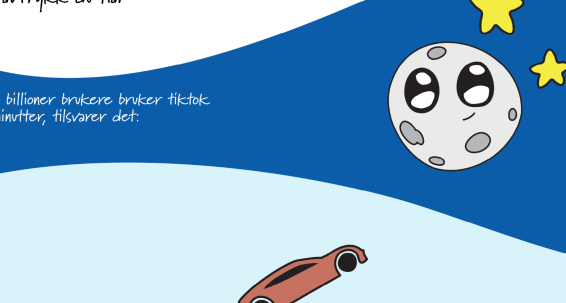

IDG1293 Portfolio Exam 2024
The portfolio showcases the three projects I've worked on for the course IDG1293 - Avansert CSS.
The portfolio design
I decided on a color palette using the Adobe Color Palette Generator. The greens and pink colors are "split complimentry colors". I created the front page slider gallery from scratch ising html, css and JavaScript. I got some help and inspirations from this YouTube Video. I had the idea of linking my projects to images in this type of slider from the begginning where clicking the image would lead the user to the project website, but I felt like it wouldn't necessarily be 100% intuitive to click an image in a gallery, which is why I decided to instruct with a message and pointer. This also lead me to decide on a "handwritten styled" font, which I later also implemented as an indicator of current page in the nav-bar to provide some originality and style-consistency.
Oblig 1
Practising BEM and using design systems
Trying to copy the design and functions of the finn.no login page mainly taught me a few lessons on cooperating on github. Me and my co-worker had quite a few issues with solving problems related to merges. This taught me to think twice and not make hasty conflict solving decisions when using github.
In terms of working with Finn's design system and using SCSS I found it very useful to store variables for the different colors in a seperate css file. By doing this it was a lot easier to categorize what the different colors were used for when pickig and reusing colors. It was also useful when working on the same website as we'd be using many of the same colors.
Looking back at the assignment I realize that I was probably "overdoing" it a little in terms of BEM by dividing the page into two divs and each of them having absolutely every element "attached" to it with BEM class names. As I've worked more on BEM I have come to understand the use of it a little more and find it very useful. The feature I enjoy the most is nesting. This makes the code so much easier to write and to work with. And it somehow provides more "common sense" to CSS.
Oblig 2
SVGs, SVGs animations, CSS drawing, and CSS animations
I worked with Nora Storrø for the second obligatory assignment and implemented the poster design provided using SVGs, imported fonts, and some absolute positioning. My main contributions to the project was extracting SVGs and implementing the poster design. Me and my co-worker decided to do some part of the poster each. We found that this was both to our advantage and disadvantage. The advantage was that we'd work through implementing the design fairly quick, but the disadvantages were that we din't get to know the other's code, and it was sometimes hard to get the different parts of the poster to fit. We also found that the page looked and responded differently onj my laptop compared to hers, which meant we both designed and implemented according to our own versions.
Our page ended up being fairly responsive due to using vw for most of the elements. We mainly used keyframe animations and one SVG-animation. We didn't have time to implement any CSS drawing, so this is one of the things I wanted to include in the new version. We also had some issues with the background being cut off on each side, and never managed to fix that. Another issue is the last two letters of the car-exhaust word-cloud being missing, probably die to the car animation overlapping it. This is a new issue having to be resolved. I think it also would have been cool to add some more advanced animations that illustrated the story of the poster more effectively.
Oblig 2 (old version) ⤦

⤤New version
I initially wanted to change the whole design of the website by present the poster as an actual poster placed in the middle of the page, with animated elements, and still being responsive, but after spending several hours trying to start almost from scracth I gave up. Instead I decided to fix the original version. I am generally quite happy with the result and think it looks a lot similar to the original poster, but for some reason the word-cloud (behind the car) decided to drop an "i" whatever I did. I tried to draw my own path in illustrator as well as using the original svg, but it just didn't want to work out.
Fixes:
1. Post background not being cut off anymore
2. Elements's size and position adjusted to resemble poster better
3. Previous word-cloud exchanged for new
4. Ensuring responsiveness
Oblig 3
Storytelling, scrollytelling, intersection observer, abimations, web interactions, accessibility and fluid
On obligatory assignment 3 I worked with Sanna Sjøholt and Toril Hokseggen to create an "interactive scrollable story" inspired by the UN's 17 sustainable goals. One of my group members had already come up with the idea of teeling a story about frogs, how they are important and how they are threatened. We all decided to sketch up a few different storyboards and we picked what we thought were the best scenes. We had great ambition and a lot of fun in the beginning. We were hight inspired by Every Last Drop. We imaged to follow a frog from one scene to the next (like the man in the Every Last Drop website). We had a clear vision of an introduction of all the good things frog "do" in the environment, then having a middle section informing on what challenges frogs are experiencing and a last section dedicated to what you can do to make things better. We realised after a while that following a frog from beginning to end would be too difficult for us technically. I therefore came up with the idea of the a frog bouncing into the scene every time (taking advantage of the frogs' bouncy nature).
My part was the middle part about frogs' challenges (from "but they are facing many challenges..." until "Experts are now worried about an AMPHIBIAN APOCALYPSE").
I think our project strength is the storytelling aspect (which we were also told during the presentation), but our biggest challenge throughout was the technical aspect. Especially when it comes to JavaScrip and the Intersection Observer. In the old version we managed to set it up (in the end), but the user experience isn't ideal as I would have prefered each scene to be "fixed" making the user unable to scroll further while animationg. I would also have preferred the animations to run when scrolling generally (like in the "Every Last Drop" project). Another big issue has been getting the interactivity in the last section to work well.
While I did not have sufficient time at this point to dig into JavaScript and make the scrolling effects even better, I did manage to solve the more important issues like positioning of buttons and better look and feel of the site. At this point the website isn't responsive and works best on wide screens. I do, however, enjoy working on scrolling and animations and hope to improve the project even further in the future.
Fixes:
1. Positioning of headings, animated elements and buttons (where needed)
2. More appropriate timing for animations, and in some cases adjusted animations
3. Added additional info buttons (on the amphibian disease chytrid fungi scene and on the last information scene)
4. Changed font of subheadings to get more variation
5. Added possibility for reduced motion for people with motion sensitivity (disabled animations altogether)
6. Improved the general look of the website